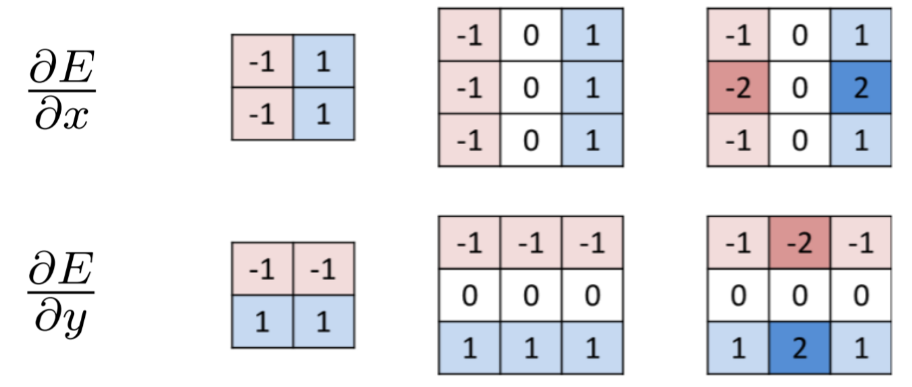

暑假上了mit的机器学习课程，虽然时间很短内容不多，但觉得第二部分cv的老师讲得很好，所以做一篇笔记。
lecture 1
第一节课是对 deep learning 和 computer vision 的一个介绍。计算机视觉，就是指观察图像，像素，理解图像里出现了是什么，预测会发生什么。
神经元（Perceptron）
具体概念已经看了太多遍了，不再赘述。
对于优化的概念，$W \leftarrow W - \eta \frac{\partial J(W)}{\partial W}$，他解释的很好。这个偏导项就是代价函数随着 $W$ 的变化增长最快的方向，再加上一个小步长，就是移动一点点，因为是最小值所以是反方向移动，是负号。
边缘检测 Edges
图上的边特征：
- 图像梯度 Image gradient: $\nabla I = \left( \dfrac{\partial I}{\partial x}, \dfrac{\partial I}{\partial y} \right)$
- 图像导数的估算 Approximation image derivative: $\dfrac{\partial I}{\partial x} \simeq I(x, y) - I(x - 1, y)$
- 边缘强度 Edge strength: $E(x, y) = |\nabla I(x, y)|$
- 边缘取向 Edge orientation: $\theta(x, y) = \angle \nabla I = \arctan{\dfrac{\partial I /\partial y}{\partial I / \partial x}}$
- 边缘法线 Edge normal: $n = \dfrac{\nabla I}{|\nabla I|}$
如果我们使用梯度算法，并绘制出边缘的强度，我们可以看到所有的边缘都暴露出来了。我们可以将这些微分方程或公式转换成图像强度的离散线性约束，这对于定义图像变化非常重要。
卷积 Convolution
卷积是一个操作两个函数的数学操作，输入两个函数输出一个（函数复合）。
通过滑动函数来计算，一个函数（kernel）划过另一个函数（template），在每一步把他们相乘再相加。
我们就可以用卷积来计算图像导数。
比如用
能用来计算
当 $k = [-1, 1]$。
然后我们可以对图像导数的定义再扩展，运用卷积计算更加复杂的一些特征。

然后已知两个方向的导数，就可以用三角函数计算出任意方向的导数而不是真的创造任意方向的导数。
将导数可视化：

甚至我们可以创造不同类型的过滤器，不只是计算导数，实现更多的图像处理技术。

这是我对卷积和图像处理认识的第一步，我感到非常震撼，原来我们所在ps等图像处理软件上所做的处理，其原理真的就是矩阵对于像素的计算。不由得想到jyy的名言：计算机世界没有魔法(。
而我们在这节课学的是如何去学习卷积的参数而不是导数卷积，也就是说找到最好的 kernel。
我们可以把很多层卷基层堆积在一起，形成一个卷积块（我自己起的名字），维度是 $H \times W \times D$，$D$ 深度是过滤层的个数。
步幅（stride）。
卷基层的特点：
- 空间不变性（Spatial invariance）
- 批量处理，高效并行
- 图像过滤
- 共享参数，高效
- 多种大小输入
gabor filters
池化 Pooling
Pooling 和 convolution 不一样的地方是，卷积在于从一块像素中提取信息，而 pooling 是为了将信息压缩，使得一块像素塌缩成一个单位，也是对数据的抽样，对信息流的限制。
max pooling
结合起来
我们就可以叠buff，一层conv一层relu一层pooling，一层conv一层relu一层pooling。。。实现一个端对端模型，一层层提取结构。
General CNN architecture:

Lecture 2
CNN Architectures
- LeNet: LeCun et al. 1998.
- 第一个视觉神经网络。
- AlexNet: Krizhevsky et al. NeurIPS 2012.
- 两个信息流并行，更深度。
- GoogLeNet/Inception: Szegedy et al. CVPR 2015.
- Inception module
- 更小的卷积，更深，更精确。
- VGGNet: Simonyan et al. ICLR 2015.
CV历史
残差连接 Scaling CNNs: residual connections
普通的卷积层的代价函数过于复杂，容易陷入局部最优，很难找到全局最优。简单的卷积加池化无法使模型更好。
我们需要学习残差的变化而不是实际的端对端函数。
残差区块 Residual blocks

不是只学习从 $x$ 到输出，我们学习的是变化、残差，以达到输出的目的。它能够把问题变得更简单。
优点：
- 更快的梯度传输。
- 只应用少量的残余值而不是整个函数值。
- 保持输入的结构。
当输出和输入的结构不一样时，加一个权重层来投影到正确的维度。
有各种各样的残差连接。
- ResNet: He et al. CVPR 2016.
- 使得机器图片识别准确性开始超过人类。
- 突破计算机可以训练的层数，$25 \to 150$。
- 代价函数更佳平滑，容易找到全局最优。
数据集 Dataset
深度学习不是什么都能学的，要仔细选择数据集，不能往里面“扔垃圾”。
Garbage in, Garbage out.
- MNIST
- Image NET
- CIFAR 10/100
- Facet: tool for vusualization of train data
- Object Net
- MiniPlaces: scene recognition